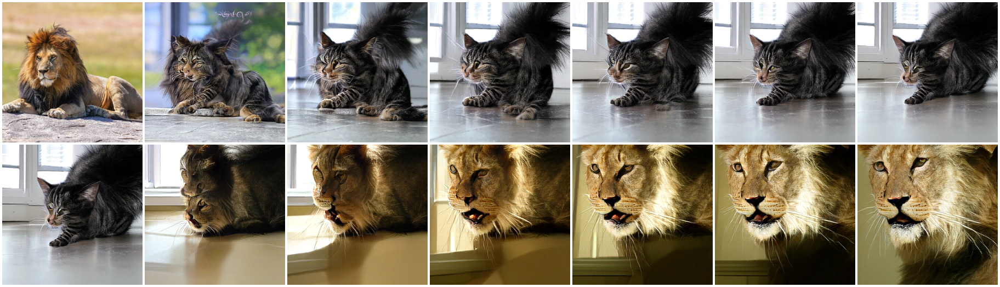
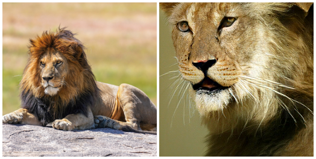
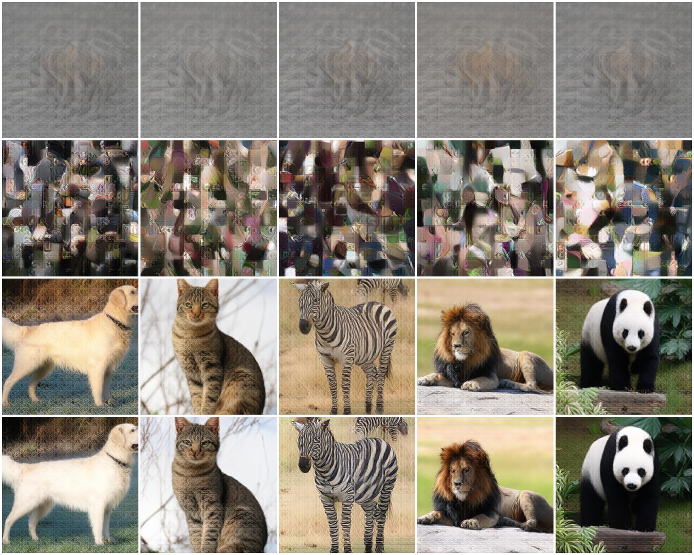
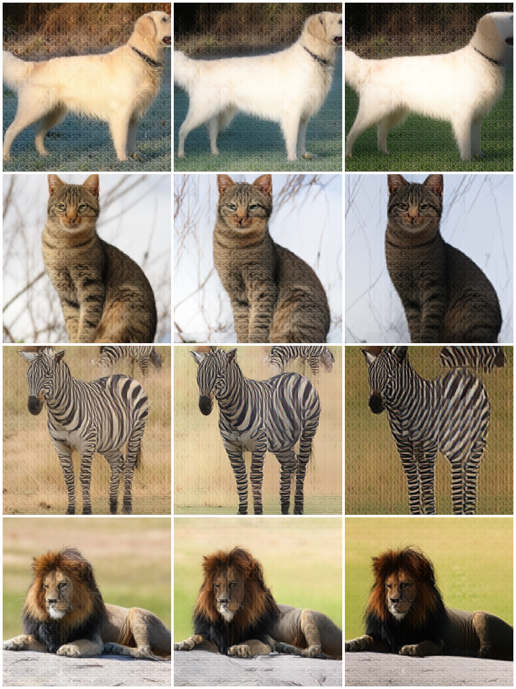

Every image the encoder produces lands in a narrow cone around one shared direction. That
"bias" holds ~70% of the latent's variance, is present for any input (even flat gray or
pure noise), is a per-channel offset from DINOv3's last layer — and it inflates the cosine
similarities we use to judge whether the prior survives editing.
Segmentation-controlled round trip
Anchor the background, and the prior stops drifting
A foreground mask (U²-Net) separates the main figure from the background. During the
whole A→B→A trip we composite the original background back at every step, so the scene is
locked and only the masked subject is edited. The scene can no longer run away.
0.75
mean content-cos, controlled
0.23
mean content-cos, uncontrolled
15.3 dB
mean PSNR, controlled
8.7 dB
mean PSNR, uncontrolled
Each panel: original · mask · uncontrolled final · controlled final, then the
controlled step-by-step strip (row 1 A→B, row 2 B→A). The mask holds the composition; the subject
returns to class A inside the original scene. (Fidelity of the masked subject still degrades at 85°,
and tiny/poor masks — e.g. peacock 4% — mostly copy the original.)
Step by step · lion → cat → lion
Does the regenerated lion return to the original's prior?
Top row: the lion edited toward cat, every diffusion step (left = original lion).
Bottom row: that generated cat edited back toward lion, every step (right = final lion).
edit angle 85°, 6 steps each pass.

The lying, left-facing posture loosely carries through — but the scene drifts (outdoor rock →
indoor floor → sunlit close-up) and the final lion is a different lion, not the one we started with.
The prior drifts down, then only partly recovers
Content-only cosine (bias removed) to the original lion's prior, across all 12 steps.
Self-similarity of the original is 1.0.
0.056
lowest content-cos (at the cat)
0.240
final lion's content-cos to the original
8.3 dB
pixel PSNR, final lion vs original
partial
prior recovered — nowhere near 1.0

Original lion (left) vs the lion after the full round trip (right): same class and rough pose,
different instance. The double 85° pass destroys content; the return trip re-aligns toward "lion" but
can't recover the specific original.
Five round trips · different classes
A → B → A, every diffusion step (angle 85°)
Each panel: top row edits A→B step by step (left = original A); bottom row edits that
generated B back to A (right = final A). The badge shows the final content-cos to the original
(1.0 = identical). Recovery is class-dependent — strong for some, near-zero for others.
The headline numbers
49 diverse animals vs the isotropic noise prior f(randn)
+0.69
mean cosine between different images (noise prior: +0.00)
70%
of latent variance in a single direction (noise: 2%)
0.84
mean cos(image, bias direction) — range 0.73–0.88
98%
of the bias is one per-channel vector copied across all 256 tokens
Decoding the latent space directly — not from an image
What the bias looks like
Rows: ① the bias direction decoded under 5 class labels, ② random
sphere points (the generator's prior), ③ real encoded images, ④ the same with the
bias direction removed.

① the single bias direction decodes to a faint, generic "animal-on-ground" ghost — nearly
identical whatever class we condition on.
② random isotropic points decode to junk: coherent images live only inside the biased cone.
③→④ removing the direction that holds 70% of the variance leaves every animal fully recognizable —
so the bias is largely content-free.
#2 · Is it about the images, or the encoder?
Even gray and noise fall into the same cone
cos(input, animal-bias-direction). If the bias were about animal content, non-animal
and degenerate inputs would sit near 0. They don't — there's a ~0.66 floor for anything.
The bias is intrinsic to the frozen DINOv3 encoder, not learned from the data.
#5 · The bias was inflating our metric
Round-trip prior preservation, raw vs bias-removed cosine
A→B→A editing at 85°. Raw cosine says the prior "stays intact" (~0.8). With the
shared bias projected out, the true content similarity is far lower — and the ordering becomes clean.
raw cosineresidual cosine (bias removed)
Removing the pedestal drops 0.78→0.23. The round trip (0.34) still recovers above the
one-way detour (0.23) but stays below a single direct edit (0.46): the double pass costs content.
#6 · Where edits go
Injected noise pushes the latent out of the cone
cos(latent, bias) as the edit mixes in noise. The encoded cone sits at 0.66–0.84;
the default 85° edit drives it to 0.07 — below even the noise floor — so the decoder must pull it back.
#4 · Where the bias comes from
It emerges in DINOv3's last block, and nothing downstream changes it
Anisotropy (mean pairwise cosine) per DINOv3 block — moderate through the network,
then it spikes at the final block.
check
result
meaning
raw encoder U vs spherified f(U)
identical
spherify is a radial rescale — it can't create or remove the bias
base vs fd-lite latents
cos = 1.0000
encoder is frozen & shared → bias is objective-invariant
#1 · One global bias · #3 structure · #7 real vs generated
observation
value
reading
between-class cos (class-mean dirs)
+0.837
classes aren't separated along these directions — one shared pedestal, not per-class biases
cos(class-mean, global bias)
+0.905
bias energy that is per-channel DC
98.0%
a single 384-d channel vector copied to every token
cos(real-bias dir, generated-bias dir)
+0.979
the generator reproduces the same bias — no real/generated gap
#8 · What the bias carries
Mostly global tone / colour, not identity
Columns: keep · remove the bias · over-remove it. Identity and pose are preserved
throughout; what shifts is the overall colour balance.

Removing the bias costs only ~3 dB of reconstruction and changes palette, not content —
the big shared direction is a low-level appearance offset.
sphere2 latent-bias probe · 49 images · figures rendered from the model's own decoder ·
served from workspace/latent_bias/site